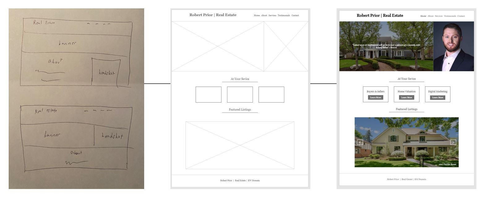
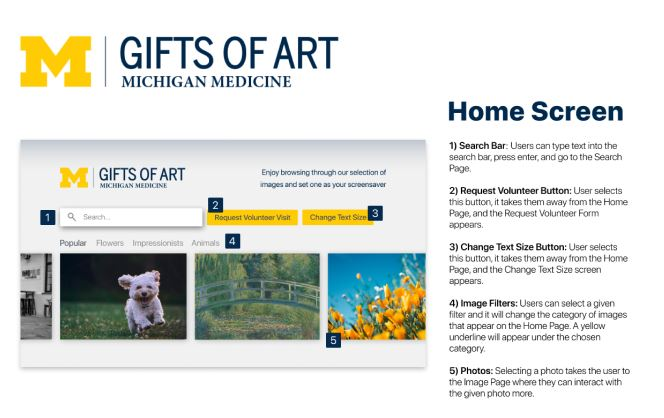

Design
App Design and Prototyping
In the fall semester of my senior year I designed an application, named Hive, with a group of four other School of Information students. The app is designed to aid the population of people that have dietary restrictions in finding places to eat. Throughout the design process we were able to create wireframes, paper prototypes, digital prototypes, and test the various prototypes on users for feedback. The process allowed for us to make numerous iterations and continue to refine the design for optimal experience, based on the feedback given. This gave me the opportunity to fully immerse myself in the research and design of a product from initial idea to final prototype. Above is a video of the final digitial prototype that was produced through Adobe Xd.
Design Process: Personas and Scenarios

In the process of designing the Hive app above there was a need for extensive preliminary research in order to create needs and requirements from a user perspective. Since we started from stratch, we first analyzed potential competitors and similar niche food applications to see where they succeeded or faultered. In doing this we were able to begin building personas, as seen in the example above, that represent potential users. The purpose of this is to identify motivations, goals, and needs of the user group as a whole. Lastly, before beginning the design and testing process, we placed these personas into scenarios to figure out best use situations for our application.
Website Design
This picture displays a couple very early sketches, low-fidelity mockups, and a final design from my experience as an indpendent researcher and designer for a local realtor. The design is intended for a website but extends as the page would scroll down. The research process included interviews, focus groups and competitive analysis of other real estate sites. After starting the wireframes in Figma, task-based user testing and A/B testing between two variations of the site were conducted before finalizing a design.
Smart TV App Design

This design is from my experience with the Art Cart program through Michigan Medicine and the University of Michigan Hospital. My group and I utilized Figma to create a smart TV app design that would allow for patients to select art to display as a screensaver. Shown is an annotated version of the design's home page. Each screen of this project was accompied by full annotations for developer handoff. Our research process leading up to our design work included interviews and observations. Moving into the design phase, we began with low-fidelity and mid-fidelity mockups that went through a series of task-based user testing before creating our final prototype.